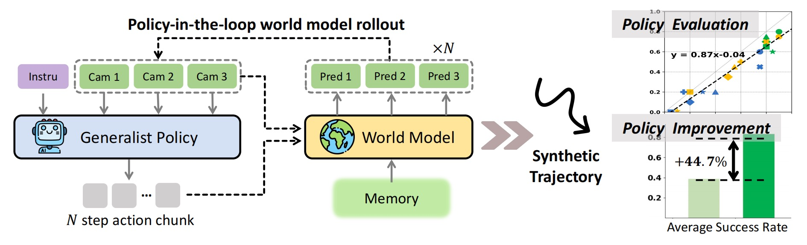

Ctrl-World · 2026.10.26
Imagine the Next Second First, Then Let the Robot Act

Ctrl-World wants to check something harder than "does the video look right": has a vision-language-action model (VLA) actually understood the instruction? The question comes from Yanjiang Guo, Lucy Xiaoyang Shi, Jianyu Chen, and Chelsea Finn, in a paper at ICLR 2026.
On a real robot this is expensive. One trajectory ties up the arm, the scene, and a person willing to reset it. After a failure you only know the cup is still on the table; you cannot tell whether the policy misunderstood or the world changed its mind for the moment. To tell them apart you have to repeat the same instruction many times across many scenes, so evaluation becomes the slowest part of iteration. Their bet: train a generative world model that takes actions, and let the policy roll the manipulation out in imagination. As long as the imagination is obedient enough, the ranking can be settled on a GPU first, with the real robot kept for final confirmation.
Betting on DROID
The data comes from DROID. One Franka Panda, one Robotiq gripper, three cameras: two casually placed third-person cameras and one on the wrist. Actions are the end-effector pose in Cartesian space plus gripper opening, seven numbers in all. The public data has about 95,000 trajectories and 564 scenes; "the room changed, the camera moved" is the norm here.
Ctrl-World trains only on this public data and then moves zero-shot to the authors' own new camera setups. The paper is restrained about what it can do: it is very good at judging whether a policy followed the instruction; it can be quite wrong about contact physics like collisions, sliding, and rotation. Compared with the physics promises on many world-model showcase pages, this sentence is a better starting point.
Turning a video generator into a simulator
The base is the 1.5-billion-parameter Stable Video Diffusion (SVD) img2vid. Pixels are compressed into latent space by a VAE, denoising happens in latent space, and the backbone is a spatiotemporal UNet: spatial layers look around within a frame, temporal layers align across frames. SVD's original job is "given an image, grow a video", with cross-attention listening to that image's CLIP embedding. Manipulation needs something else: given the current frame, how the hand will move over the next second, and the instruction, grow the next second. The authors kept the diffusion machinery, the current frame is still concatenated into every frame along channels the way SVD does it, and the changes concentrate in three places.
The first is multi-view. The three cameras are each encoded into 24×40 latents, stacked along height into one tall 72×40 image, denoised together as one video, and split back into three afterward. Spatial attention already looks around within one image, so the wrist view and the two third-person views land in the same attention window, and multi-view consistency comes almost for free. The paper also finds that predicting the wrist camera alongside clearly reduces hallucinations during contact. That makes sense: the cameras by the table often cannot see whether something is in the gripper, while the wrist camera sees it best.
The second is per-frame action conditioning. The action encoder is a three-layer MLP that lifts the 7-dim pose to 1024 dims; text goes through CLIP ViT-B/32, whose 512 dims are duplicated to make 1024 and added to each frame's action feature. SVD has every frame look at the same image token; Ctrl-World changes the condition to one token per frame, so frame t's spatial cross-attention can only see the t-th pose. There is an interesting degeneracy here: with only one key, softmax can only give it one hundred percent of the vote, so this layer of "attention" actually projects the pose embedding and adds it as-is to every spatial position of that frame. It does not select; it only aligns. What each frame should become is decided by that frame's own pose, and the causal effect of actions lands on every frame.
The third is pose-conditioned memory. Long trajectories are stitched together one second at a time, and errors accumulate one second at a time. Each interaction round pushes the last predicted latent frame into a history buffer, and the next round samples 6 frames sparsely from the buffer as history. The indices in the replay script are [0, 0, -8, -6, -4, -2]: the opening frame twice, and the other four frames one every two rounds. The buffer gets one frame per round, and a round is 4 new frames at 5 Hz, so it can look back about six seconds at most. Each history frame carries the arm pose at the time it was captured, injected through that same single token. Since cross-attention only attaches labels, the "retrieval" more likely happens in temporal attention: frames tagged with "where the hand was then" compare against each other, and the current frame can recognize the moment most like itself. The paper calls this pose-conditioned memory retrieval, at the cost of just 6 more frames in the sequence. With 5 future frames, that is 11 pose tokens in all; at 5 Hz those 5 frames are about one second of imagination.
Training follows SVD's EDM parameterization. Noise level sigma is drawn from a log-normal distribution, the network sees the noisy latent scaled by c_in, c_skip and c_out restore the output to a clean sample, and the error is weighted by (sigma²+1)/sigma², computed only on the 5 future frames. History frames get only a little noise as conditions, so that at inference, when history is replaced by the model's own less clean generated frames, it does not panic. Actions and text are zeroed out together with about 5% probability, leaving an empty condition for classifier-free guidance. At inference guidance_scale is set to 1.0, so that door is basically closed; denoising takes 50 Euler steps in bfloat16.
Letting the policy play in imagination
The off-the-shelf π0 and π0.5 DROID policies output joint velocities, while the world model understands end-effector poses. The authors trained a small MLP adapter on DROID that predicts future joint angles from current joint angles and the policy's joint velocities, and then converts them to Cartesian poses with Franka's forward kinematics. The policy looks at the imagined frames and outputs actions, the adapter translates, the world model grows the next second, and so on round after round; the paper can imagine continuously for more than twenty seconds.
The paper reports two things. One is ranking: without running the real robot, it can still rank policies correctly. The world model judges "did it follow the instruction" very accurately, but underestimates execution success; real policies retry repeatedly after failing, a habit the world model sometimes fails to learn. The other is improvement: synthesize successful trajectories in imagination and use them for supervised fine-tuning of the policy, raising success by 44.7%. Here the world model goes from examiner to sparring partner.
Replay is the plainest path in this system. It does not connect a policy; it feeds the end-effector trajectory recorded in the dataset back as-is, and the world model only has to answer: if the hand moves like this, what should the three cameras see? The saved videos stack the decoded ground truth and the imagination one above the other, so you can tell at a glance whether the banana really moved right. In the small subset shipped with the repo, the replay config picks three: move the banana to the right, put the black thing on the chair onto the table, move the green towel to the right of the lid, with 12 interactions each. Closed loop needs another setup with JAX and openpi to load the π0.5 checkpoint; replay depends only on the world model itself and is the cleanest way to check the port.
On the W7900, the word CUDA is still there
The code has no hand-written CUDA kernels, device names are cuda everywhere, even the tensors in the checkpoint are tagged cuda:0, and in ROCm PyTorch that is HIP underneath. What the port really has to guard against is the installation quietly swapping this card for an NVIDIA card that does not exist. torch was removed from the requirements list, but accelerate depends on it; the image's ROCm torch lives in /opt/venv, while the project venv's --system-site-packages inherits the system directory. pip cannot see the ROCm torch, so it dutifully installs torch 2.14.1 and 15 nvidia-* packages, newer than the one in the image, just for a different vendor's GPU. The install script uninstalls them right after, inference uses the image's own interpreter, the other dependencies are passed in through PYTHONPATH, and not one line of diffusion code changed.
Of eight W7900D cards, the container gets one: only /dev/kfd and GPU 0's renderD128 are mounted, without relying on any visible-device variable, and rocminfo inside the container counts only one gfx1100. I was nearly fooled by numbering when picking the node: this machine's card0 is the display controller of the motherboard's ASPEED management chip, which can light up a monitor but cannot compute a single denoising step; GPU 0 is card1, while its render node is renderD128. Peak memory is about 30 GiB, so one 48 GB card fits one imagination session. Imagination is autoregressive, the next second waits for the previous one, so it cannot parallelize along time, and splitting it across cards only adds communication. Evaluation needs many independent trajectories, and the right use of eight cards is eight sessions at once.
I switched video reading to PyAV, at first thinking decord had no CPython 3.12 wheel; in fact its wheel is py3-none and installs fine, so I wronged it. Fortunately both decode pixel-identical frames on the 12 validation videos.
The three trajectories finished in 575 seconds with exit code 0. 50-step denoising averages 12.4 seconds, 14 to 15 seconds per interaction including decoding; the upstream README gives about 10 seconds for an A100, without skipping a single step. An exit code alone says nothing about whether the imagination is right, so I also computed PSNR on the videos: prediction against ground truth averages 22.5 dB, while a "lazy world model" that keeps repeating the first frame gets 17.0 dB. The biggest gap is on the wrist camera, where the baseline is only 11 to 12.5 dB and the prediction is 4.7 to 9 dB higher: the camera moves with the hand, and a model that ignores actions has the hardest time hiding there. Replay does not fix the random seed, and comparing the predictions of two runs against each other gives only 21 to 23 dB, about the same as prediction against ground truth. Diffusion sampling itself makes the future come out a little different each time, so a good part of the distance between 22.5 dB and a perfect score may come from "the future is not unique", not all from the model being wrong. π0.5 closed loop and training were not run this time; the conclusions cover only the replay path.
The code, logs, and videos from this run are at https://github.com/charyang-ai/ctrl-world.